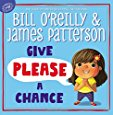
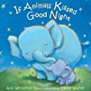
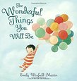
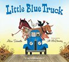

Let's share
Let's share our favorite children's books. We and our children will enjoy the stories and pictures of the books. And it will arouse children to read more books and expand their knowledge.
Top 5 Children's Books About Sharing
|  | Give Please A Chance:In this instant classic, Bill O'Reilly and James Patterson together present a beautifully illustrated picture book that celebrates the magic of the word "Please" for our children. In this inspired collaboration, bestselling authors Bill O'Reilly and James Patterson remind us all that a single word--"Please?"--is useful in a thousand different ways. From finding a lovable stray dog to needing a partner on a seesaw, from reading a bedtime story to really, really needing a cookie, Give Please a Chance depicts scenes and situations in which one small word can move mountains. With a vivid array of illustrations by seventeen different artists, this charming, helpful book is a fun and memorable way for children to learn the magic power of one simple word: please. |
|  | If Animals Kissed Goodnight:
If animals kissed like we kiss good night, Giraffe and his calf would stretch their necks high and kiss just beneath the top of the sky. In a cozy bedtime chat with her mom, a young girl wonders how animal families might say good night. Would Wolf and his pup "kiss and then HOWL"? Would Bear and her cub "kiss and then GROWL"? But what about Sloth and her baby? They move soooo slooowwwww . . . they're sure to be kissing from early evening until long after everyone else is fast asleep! With whimsical art and playful rhyming verse, this picture book is now in board book format for the first time, perfect for bedtime snuggles. |
|  | The Wonderful Things You Will Be:From brave and bold to creative and clever, Emily Winfield Martin's rhythmic rhyme expresses all the loving things that parents think of when they look at their children. With beautiful, and sometimes humorous, illustrations, and a clever gatefold with kids in costumes, this is a book grown-ups will love reading over and over to kids—both young and old. A great gift for any occasion, but a special stand-out for baby showers, birthdays, and graduation. The Wonderful Things You Will Be has a loving and truthful message that will endure for lifetimes. |
|  | Little Blue Truck board book:Beep! Beep! Beep! Meet Blue. A muddy country road is no match for this little pick up--that is, until he gets stuck while pushing a dump truck out of the muck. Luckily, Blue has made a pack of farm animal friends along his route. And they're willing to do whatever it takes to get their pal back on the road.With a text full of truck sounds and animal noises to read aloud, here is a rollicking homage to the power of friendship and the rewards of helping others. Includes a downloadable party kit for even more fun! |
 |
Take Heart, My Child: A Mother's Dream:In the tradition of Emily Winfield Martin’s The Wonderful Things You Will Be and Nancy Tillman’s On The Night You Were Born, popular FOX news anchor Ainsley Earhardt’s lyrical lullaby inspires children to follow their dreams and passions. FOX and Friends cohost Ainsley Earhardt’s debut picture book shares precious life lessons parents can pass onto their children so that they can follow their hearts, dreams, and passions. Take Heart, My Child is a lyrical lullaby, and Ainsley shares her own hopes and dreams, and lets her child know that whatever challenges life brings, “Take heart, my child, I will—or, my love will—always be there for you.” It’s a universal message, one that all readers will relate to. In the “Story Behind the Story,” Ainsley talks about growing up and how her father would write messages to her and her siblings each morning, leaving notes at the breakfast table, so that his children would know they were loved, empowered, protected, and cherished. |